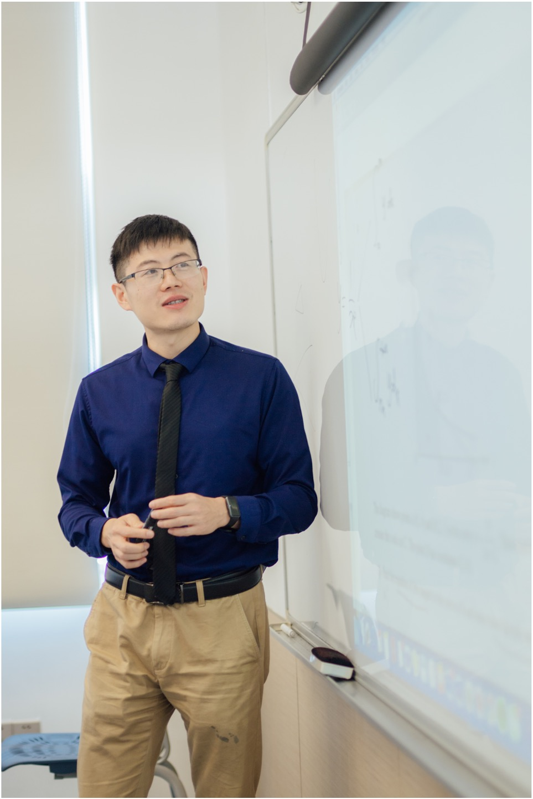
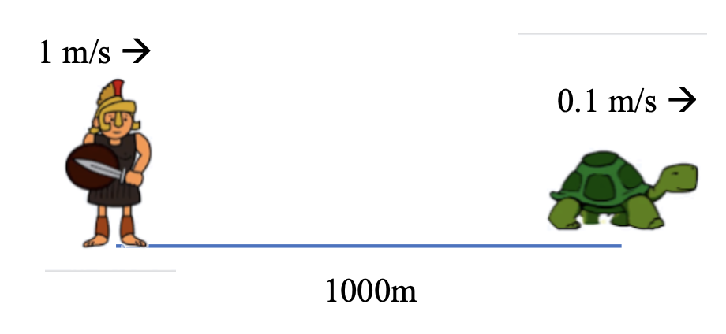

Sum to infinity and its visualization
无穷等比数列与可视化
Tim Hu
Tim Hu
Let's explore the beauty of Mathematics

- 🎓 Head of Math
- 📝 A-level数学官方阅卷官
- 🏅 广州市花都区优秀教师
- ⏳ 13年国际数学课程教学经验
- 🏆 数学竞赛教练
- 💻 Mathematica极客
Zeno's Paradox / 芝诺悖论
Achilles and the Tortoise 阿基里斯与乌龟
Mathematical Analysis / 数学分析
Exercise 2: Assume the speed of Achilles and tortoise are 1 m/s and 0.1 m/s respectively. Achilles is 1000 m behind the tortoise and both of them running forward at the same time. How much time does Achilles need to catch the tortoise?
(Try to analyze the problem with an infinite series.)
(Try to analyze the problem with an infinite series.)
Achilles' Distance Sequence:
$$ D = 1000 + 100 + 10 + 1 + 0.1 + \dots $$
$$ D = 1000 + 100 + 10 + 1 + 0.1 + \dots $$
Time Needed (T = D / Speed):
$$ T = \frac{1000 + 100 + 10 + 1 + 0.1 + \dots}{1} \text{ (seconds)} $$
$$ T = \frac{1000 + 100 + 10 + 1 + 0.1 + \dots}{1} \text{ (seconds)} $$
But how to calculate infinite sums? 🤯

Learning Objective & Success Criteria
学习目标与成功标准
Learning Objective / 学习目标:
Visualize infinite geometric series geometrically to understand their convergence and sums.
通过几何图形可视化无穷等比数列，从而直观地理解它们的收敛性和求和结果。
Success Criteria / 成功标准:
-
I can correctly identify the first term \( a \) and common ratio \( r \) from a visual geometric pattern.我能从几何图案中正确识别出无穷等比数列的首项 \( a \) 和公比 \( r \)。
-
I can apply the formula \( S_\infty = \frac{a}{1-r} \) to find the total area or length.我能运用公式 \( S_\infty = \frac{a}{1-r} \) 计算出图形的总面积或总长度。
Infinite Geometric Series / 无穷等比数列
Let's consider the sum of a geometric series:
让我们考虑一个等比数列的求和：
$$ S_n = a + ar + ar^2 + ar^3 + \dots + ar^{n-1} $$
$$ S_n = \frac{a(1-r^n)}{1-r} $$
As \( n \to \infty \) (where \( |r| < 1 \)):
当 \( n \to \infty \) 时（且 \( |r| < 1 \)）：
$$ S_{\infty} = \frac{a}{1-r} $$
Back to Achilles: \( a = 1000, r = 0.1 \)
$$ T = \frac{1000}{1 - 0.1} = \frac{10000}{9} \approx 1111.11 \text{ s} $$
The Classic Half / 经典的二分之一
$$ \frac{1}{2} + \frac{1}{4} + \frac{1}{8} + \frac{1}{16} + \dots = \text{?} $$
$$ = \frac{\frac{1}{2}}{1 - \frac{1}{2}} $$
$$ = 1 $$
Divide a square in half, then divide the remaining half in half again...
正方形分成一半，剩下的一半再分成一半，以此类推...
Visualizing Thirds / 三分之一的可视化
$$ \frac{1}{3} + \frac{1}{9} + \frac{1}{27} + \frac{1}{81} + \dots = \text{?} $$
$$ = \frac{\frac{1}{3}}{1 - \frac{1}{3}} $$
$$ = \frac{1}{2} $$
Notice how the orange area perfectly equals the blue area, filling the whole square eventually!
注意观察：橙色面积与蓝色面积完全相等，最终填满整个正方形，因此每种颜色占一半 (1/2)！
Visualizing Quarters / 四分之一的可视化
$$ \frac{1}{4} + \frac{1}{16} + \frac{1}{64} + \frac{1}{256} + \dots = \text{?} $$
$$ = \frac{\frac{1}{4}}{1 - \frac{1}{4}} $$
$$ = \frac{1}{3} $$
Divide a square into 4, color 3 parts differently. Repeat for the empty part. Any single color covers exactly 1/3!
正方形分成四份，涂其中三个1/4为三个不同颜色。对空白部分重复此操作。每种颜色精确占整体的1/3！
Pattern 1 / 规律 1
If the pattern goes into infinity, I think:
如果这个图案无限延伸，我认为：
What is the ratio between the blue and orange area?
(蓝色和橙色面积的比例是多少？)
(蓝色和橙色面积的比例是多少？)
Solution 1: Infinite Geometric Series
Orange = 1/2 + 1/8 + ... = 2/3
Blue = 1/4 + 1/16 + ... = 1/3
Ratio is 1:2.
Orange = 1/2 + 1/8 + ... = 2/3
Blue = 1/4 + 1/16 + ... = 1/3
Ratio is 1:2.
解法 1：无穷等比数列
利用公式求和可得比例为 1:2。
利用公式求和可得比例为 1:2。
Solution 2: Self-similarity
Let square area = 1, orange area = y. The blue is a scaled down version (1/2 area) of orange.
Let square area = 1, orange area = y. The blue is a scaled down version (1/2 area) of orange.
解法 2：利用自相似性
设正方形面积为1，黄色(橙色)部分面积为y。蓝色部分面积为 y * 1/2。
设正方形面积为1，黄色(橙色)部分面积为y。蓝色部分面积为 y * 1/2。
$$ y + \frac{1}{2}y = 1 \implies y = \frac{2}{3} $$
Pattern 2 / 规律 2
If the pattern goes into infinity, I think:
如果这个图案无限延伸，我认为：
My reasoning:
我的推理：
Pattern 3 / 规律 3
If the pattern goes into infinity, I think:
如果这个图案无限延伸，我认为：
My reasoning:
我的推理：
Pattern 4 / 规律 4
If the pattern goes into infinity, I think:
如果这个图案无限延伸，我认为：
My reasoning:
我的推理：
Pattern 5 / 规律 5
If the pattern goes into infinity, I think:
如果这个图案无限延伸，我认为：
My reasoning:
我的推理：
Pattern 6 / 规律 6
If the pattern goes into infinity, I think:
如果这个图案无限延伸，我认为：
My reasoning:
我的推理：
Pattern 7 / 规律 7 (Koch Snowflake)
Let initial triangle area be 1. How does the area grow?
假设初始三角形面积为 1。总面积如何增长？
| Step (n) | New Triangles | Area of Each | Added Area |
|---|---|---|---|
| 0 | 1 (Initial) | 1 | 1 |
| 1 | 3 | \(\frac{1}{9}\) | \(\frac{3}{9} = \frac{1}{3}\) |
| 2 | \(3 \times 4 = 12\) | \(\frac{1}{81}\) | \(\frac{12}{81} = \frac{4}{27}\) |
| 3 | \(12 \times 4 = 48\) | \(\frac{1}{729}\) | \(\frac{48}{729} = \frac{16}{243}\) |
| n | \(3 \times 4^{n-1}\) | \(\left(\frac{1}{9}\right)^n\) | \(\frac{1}{3} \left(\frac{4}{9}\right)^{n-1}\) |
Total Area:
$$ S = 1 + \frac{1}{3} + \frac{4}{27} + \frac{16}{243} + \dots $$
$$ S = 1 + \frac{1/3}{1 - 4/9} = 1 + \frac{1/3}{5/9} = 1 + \frac{3}{5} $$
$$ S = \frac{8}{5} = 1.6 $$
What makes Mathematics "Interesting"?
我们说一个数学命题“有趣”时，这意味着什么？
"Interesting math is often counter-intuitive, surprising us and elegantly connecting seemingly unrelated concepts."
“有趣的数学往往是反直觉的，它让我们感到惊讶，并将看似毫无关联的概念优雅地联系在一起。”
The Leibniz Series / 莱布尼兹级数的证明
$$ \frac{1}{1-x} = 1 + x + x^2 + x^3 + x^4 + \dots \quad (|x|<1) $$
代入 -x：
代入 x²：
两边同时求积分：
$$ \arctan(x) = x - \frac{x^3}{3} + \frac{x^5}{5} - \frac{x^7}{7} + \dots $$
代入 x = 1：
Let's watch a beautiful visualization:
让我们看一个绝美的可视化视频：
1 / 19